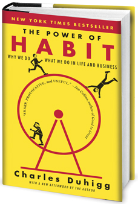

We are all creatures of habit. Habit’s that we have chosen at some point and then ingrained into patterns that we follow. Unless something inhibits this pattern we typically are predictable; following our own patterns.
Willpower: Willpower is a present tense measurement of the strength of following our conscience choice versus the default pattern of our fleshly nature. Willpower is at its strongest when we’ve recently awoken and have had the ideal amount of sleep, food, and exercise. Muscular activity helps with activating appropriate chemicals in our mind to be more clear headed and assertive.
Willpower decreases the longer a person stays awake and the body/mind fatigues. Also will power can be affected by both stimulants and depressants such as overeating, sugar, alcohol, and drugs. Willpower is at it’s weakest when you combine several of these factors plus being in a situation where you are prone to give in. Adding each factor exponentially increases the odds of you acting on fleshly desire rather than the integrity of your willpower. Being sleep deprived, eating too much, and placing yourself where you will be tempted is an almost guarantee that you’ve already chosen to give in.
So how do you prevent yourself from giving in when your willpower increasingly strides towards empty?
Well the answer involves everything you do. Remember we are creatures of habits and patterns. Our very soul is a garden of these things. When you compromise in one area it’s as a weed that will affect the entirety of you. So we must establish proper disciplines now which will establish our future.
Our mind has an interesting principle few notice. We are either in a good mood, or we aren’t; a positive state of mind, or a negative. It is in only one of these two states at any one time. And that is something we have direct control over. What we allow ourselves to think, and think through. Do your best to never think of things in the negative aspect. Switch from saying “Don’t do bad” to “Do good”. Our subconscious is a powerful machine when you say ‘don’t forget’ the part the mind processes is the forget part. Now a far more effective approach is to say “please remember”. These things aren’t apparent to most people, but practice them and you will see a difference. Knowing is half the battle.
Fears and doubts are often misplaced. There are healthy fears, and doubts; and unhealthy ones. A healthy fear is something like sticking a knife into a toaster while it’s on may electrocute me and kill me. That’s a healthy fear because it’s true. An unhealthy fear is thinking “I’m going to do terribly at the interview, and the other person is going to think poorly about me”. This is based on a future which does not exist, it is purely imaginary… a lie. What’s worse is this kind of fear will actually cloud your mind and continue to grow. Which leads you to a wrecked state which in most cases will fulfil the very lie you created. Fear is a self fulfilling prophecy. It’s a lie that’s twists and conforms you to the very thing you don’t want. Learn to put all fears and doubts aside by telling yourself “I have no place believing this lie, it both tricks and deceives. I will instead be optimistic in the potential I have and that I know I am capable to bring about.” Saying these words will reinforce and affirm to yourself strength and hope in any situation. These also are most often self fulfilling prophecies. We are the collection of thoughts we set ourselves to. Be confident, don’t let trivial things bother you, and learn to see beyond the events in your life to the future which you have a part in making.
Set goals. Start small, but be sure to increase them regularly. You start with walking, increase it to jogging, then running, and then stride beyond even that. A tip on running: it’s so much easier when you have a destination in mind; and when you do it for the fun of it, rather than seeing it as work. Running helps the heart, mind, lungs, digestion, and cleansing out the toxins from your body when you sweat. It also helps with self confidence and self image. Therefor I highly recommend it. You aren’t a master the first day, nor the next, but with persistence you obtain mastery and fulfilment in the craft of it.
Find things that drive you. A future hope you literally see yourself in, and you “run towards”. Determination is a key element to success and mastery in our own lives. Determination isn’t something that just comes to you. It is first a choice you make, then with your mind and heart you drive your energy and passion into it. It’s a unique quality we have where we are driving ourselves with “nothing’s going to stop me” and “I can already see myself winning”. It’s a state where while we’re fully into it it’s as if we’re flying. Determination is something we need to guard as well; guard against fears and doubts. Remember those are lies about the future. They are the path we are NOT walking.
Words: Words have far more power than people either realize, or let on. They say you can tell a person by their five closest friends. This is largely because of the power of influence words have over our own lives. When we first grow up our quickest way of learning is “mimicry”. Also we identify most with people we are most like. When the conversation is going really well we will have the same physical stance as the other person(s). Look at your hands, feet, angle of the body. All of these things we tend to mirror if we are comfortable and the conversation is going well. Mimicry is the most powerful form of learning we are capable of. So choose your friends wisely. Be willing to leave the bad apples in your group. One bad apple will almost always influence the good one rather than the other way around.
I say “Sticks and stones may break the bones, but words will touch the soul”.
There is so much to discuss when it comes to our mind, who we are, and how we are this way. I hope this article provided some insights for you. I’ll recommend some books if you’re interested in more of this kind of thing. But first I would be remiss if I didn’t mention what’s most important. The best pattern we can follow is that of “Jesus Christ”. To be selfless, to love, and to walk in integrity. There is no greater person to model yourself after then this “Son of man”, who is the Son of God.
For all who are adopted into His family He has given us promises. Over fear He has given us:
“For God has not given us a spirit of fear, but of power and of love and of a sound mind.” – 2 Timothy 1:7
In weakness He is our strength:
“And lest I should be exalted above measure by the abundance of the revelations, a thorn in the flesh was given to me, a messenger of Satan to buffet me, lest I be exalted above measure. Concerning this thing I pleaded with the Lord three times that it might depart from me. And He said to me, “My grace is sufficient for you, for My strength is made perfect in weakness.” Therefore most gladly I will rather boast in my infirmities, that the power of Christ may rest upon me. Therefore I take pleasure in infirmities, in reproaches, in needs, in persecutions, in distresses, for Christ’s sake. For when I am weak, then I am strong.” – 2 Corinthians 12:7-10
and to establish us:
“Now may our Lord Jesus Christ Himself, and our God and Father, who has loved us and given us everlasting consolation and good hope by grace, comfort your hearts and establish you in every good word and work.” – 2 Thessalonians 2:16-17
So in the interest of deeper study here are some books that can help provide deeper insights into understanding ourselves.
|
For understanding our subconscious read the first chapter of “Why Jesus?” by Ravi Zacharias. |
|
 For understanding habits read “The Power of Habit Why We Do What We Do in Life and Business” by Charles Duhigg. |
|
And if you worry at all this is a good book “How to Stop Worrying and Start Living Time-Tested Methods for Conquering Worry” by Dale Carnegie |
Reading positive life changing books should be a habit you keep. The results won’t be immediate, but it will lead to a far more rewarding life. Take time to read just 10 pages per day. It’s a goal, and it’s achievable.
God Bless!